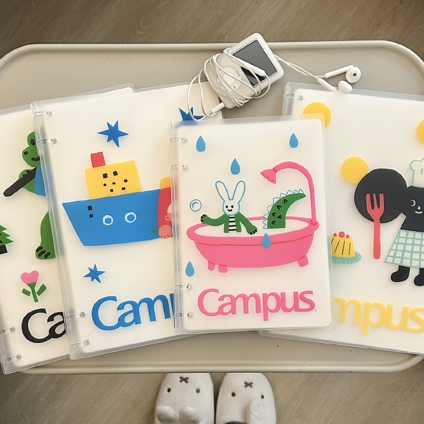
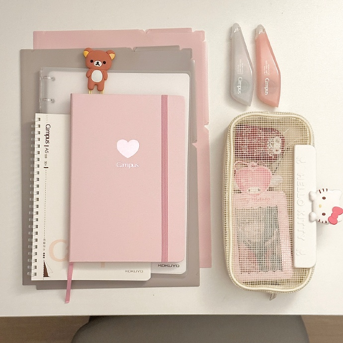

stationery collections
Many people who have a deep appreciation for writing and artistic expression often discover that stationery collecting is not just a hobby but a truly rewarding and inspiring pastime. For them, each item—be it a beautifully crafted fountain pen, a notebook with luxurious paper, or a set of vibrant markers—becomes more than a tool; it transforms into a source of creative joy and personal connection. The textures, colors, and designs of quality stationery often evoke a sense of nostalgia or spark new ideas, making the act of collecting both a practical and emotional experience. This passion for stationery allows enthusiasts to express their individuality, celebrate the art of handwriting, and cherish the tactile nature of creating something meaningful in an increasingly digital world.
Essentials of a Stationery Collection
Notebooks, pens, stickers, and fancy paper form the cornerstone of any stationery enthusiast's collection, each playing a unique role in their creative journey. Notebooks come in a variety of sizes, bindings, and paper types, catering to every purpose, from journaling and sketching to meticulous planning. Pens, whether sleek fountain pens, colorful gel pens, or classic ballpoints, are prized not only for their utility but also for their design and the way they enhance the writing experience. Stickers, with their playful designs and endless themes, add a touch of personalization and charm to notebooks, planners, and letters. Fancy paper, ranging from textured sheets to shimmering stationery sets, often serves as the perfect canvas for heartfelt letters or artistic experiments. Together, these items reflect the personality and style of the collector, transforming their stationery stash into a treasure trove of inspiration and creativity.
stationery store
this is a box
The Pursuit of Unique and High-Quality Stationery
Those who are passionate about stationery often dedicate considerable time and effort to seeking out rare designs and premium-quality items that stand out from the ordinary. They may hunt for limited-edition notebooks with intricate covers, pens crafted by renowned makers, or specialty papers with unique textures and finishes. This pursuit is driven by a desire for pieces that not only serve a functional purpose but also bring a sense of artistry and exclusivity to their collection. For many enthusiasts, finding these exceptional items is as much about the thrill of discovery as it is about owning objects that inspire creativity and reflect their personal taste.- notebook
- marker
- blue
- light purplr
- pink
- highlighter
The Joy of Organizing a Stationery Collection
Arranging and categorizing stationery items can be an equally rewarding experience as acquiring new additions to the collection. For many enthusiasts, organizing their collection offers a sense of satisfaction and creativity, turning what might seem like a mundane task into a joyful ritual. Whether it involves neatly lining up pens by color, arranging notebooks by size or design, or sorting stickers and paper by themes, the process allows collectors to revisit and appreciate each item in their possession. This act of tidying often sparks inspiration, as they rediscover forgotten treasures or imagine new ways to use their beloved supplies. Moreover, the organized display of their collection becomes a source of pride, transforming their space into a personalized showcase of their passion for stationery.